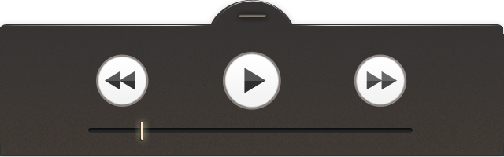

建筑七绝
更多>>
后进西厅
广州象牙雕刻
象牙雕刻以象牙为材料，雕刻成为各种装饰艺术品和实用工艺品。镂雕象牙球是广州象牙雕刻的代表，它运用特殊的技巧，用一块实心的完整象牙手工镂脱雕刻而成的，象牙球球中有球，一层叠套一层，层层分离，各层球体还可以独立自如转动，玲珑剔透、精美绝伦。 大家眼前看到的是制作象牙球的六道工序，其中最为关键的就是“脱层”，艺人经过精确的计算，采用简单的工具，凭借丰富的经验和手感协调配合，对象牙球进行镂空分层，稍有失误就会前功尽弃。我馆陈列的这个象牙球是象牙球中的精品，它球体不大，但却有少则23层，多则63层的小球，每层薄如纸，雕工精美，自由转动，技艺精湛，令人叹为观止。
象牙雕刻以象牙为材料，雕刻成为各种装饰艺术品和实用工艺品。镂雕象牙球是广州象牙雕刻的代表，它运用特殊的技巧，用一块实心的完整象牙手工镂脱雕刻而成的，象牙球球中有球，一层叠套一层，层层分离，各层球体还可以独立自如转动，玲珑剔透、精美绝伦。 大家眼前看到的是制作象牙球的六道工序，其中最为关键的就是“脱层”，艺人经过精确的计算，采用简单的工具，凭借丰富的经验和手感协调配合，对象牙球进行镂空分层，稍有失误就会前功尽弃。我馆陈列的这个象牙球是象牙球中的精品，它球体不大，但却有少则23层，多则63层的小球，每层薄如纸，雕工精美，自由转动，技艺精湛，令人叹为观止。